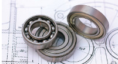

Bearings and Their Many Forms
Bearings are what make the world go around. Without them, many modern machines could not exist. And without heat treatment, bearings could not do their job.
Bearings take a variety of forms for different types of jobs. They include:
- Air
- Babbit
- Ball
- Magnetic
Did you know that the first practical caged roller bearing was invented in 1760? Caged ball and roller bearings prevent the bearing elements from rubbing against each other, which causes additional friction.
Steel developments in the 1800s transformed the manufacture and use of rolling-element bearings. Through-hardened components, as the name implies, have the same hardness all the way through the part. Case-carburized components, on the other hand, denote a hard surface but a softer interior. These bearings are typically case hardened by carburizing the surface followed by a conventional austenitize, quench and temper hardening process.
To gain further insight, Industrial Heating asked expert Mike Schneider, FASM, The Timken Company.